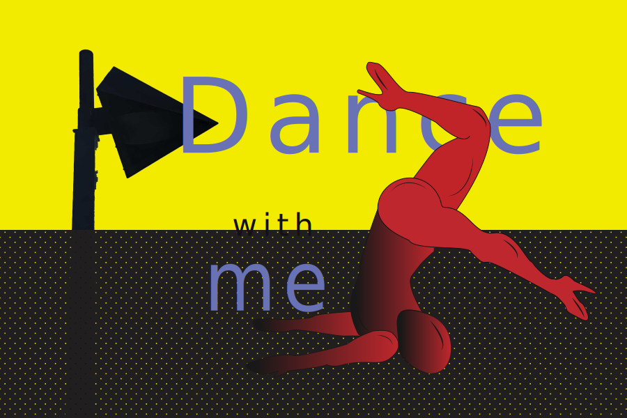

Home | Raster | Vecter | Time Base Media | Print Layout | Contact

The Vector Project was sprired by posing of dancer. Duke wishes to own a dance stuio in his side-career. He loves to dance and perform. The red color is chosen to attract people to see at the poster.
© Copy Right 2018